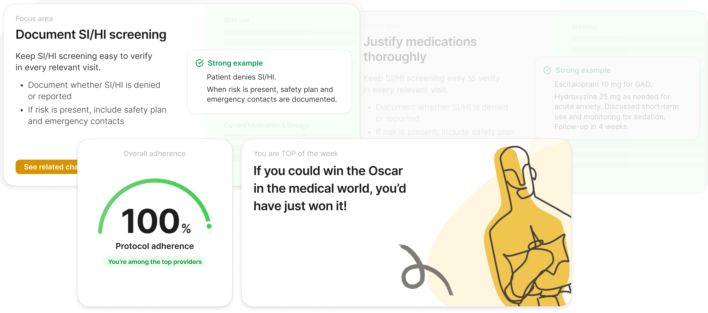

AI Chart Review
Transforming a fragmented manual process into a scalable, compliant
ecosystem: Started as an AI chart review workflow for one user role
and evolved into an AI tool supporting core tasks across three roles.


Eliminate legal compliance risks and reduce administrative overhead
by automating 100% of the chart review cycle.
- Manual Excel reviews
- Compliance black hole
- Legal security risks
- Centralize audits
- Automate with AI
- Enable scaling
- AI-augmented UX
- Integrated CRM flow
- Multi-role system
Business Risks &
Legal Compliance
Original chart review was a fragmented, manual workflow relying on external spreadsheets. This created a compliance black hole: with no centralized tracking, the business couldn't programmatically prove that 100% of charts were being reviewed.
Moving sensitive medical data outside the system created significant HIPAA risks, while the lack of an audit trail left the company vulnerable to legal challenges regarding clinical quality.
Design one product for three different needs
The task — to design one coherent AI-powered experience that would support review
efficiency, documentation quality transparency, and compliance operations in the same
system.


A unified AI-powered chart review system
I designed one connected product with dedicated experiences for Reviewers, Providers, and MedOps.
Reviewer workflow
Assigned charts in one place, in-system review flow, contextual comments, and AI-generated score validation against clinic criteria.
Provider transparency
Access to personal charts, AI-based scoring by clinic protocol, visibility into strengths and weak spots, clear feedback loop for improvement.
MedOps dashboard
Clinic-wide compliance overview, provider quality monitoring, problem area detection, review plan tracking and manual assignment.
The Decision Makers
I designed a high-velocity workspace where reviewers transition from manual data entry
to strategic validation. The UI surface provides a side-by-side view of the patient chart
and AI-generated insights, allowing experts to verify or contest flags with a single click.
This hybrid human-in-the-loop approach ensures medical accuracy while maintaining record-breaking processing speeds.

Continuous Growth
To eliminate the 'black box' feeling of medical audits, I created a transparency dashboard for providers. Instead of just receiving a final score, doctors can explore specific points for growth and see the exact reasoning behind every flag. This transforms a punitive audit process into a collaborative tool for professional development and clinical excellence.



Strategic Oversight
For the operations team, I built a "Command Center" focused on total visibility. The dashboard tracks real-time compliance scores across the entire organization and drills down into individual provider performance. Most importantly, it monitors the execution of the legal review plan, ensuring the business meets its 100% audit obligations and stays 'audit-ready' at all times


From a narrow workflow to organizational Growth
"What started as a niche tool for chart reviewers evolved into a centralized product surface serving three core organizational functions. By unifying Reviewers, Providers, and MedOps within a single AI-driven ecosystem, we didn't just speed up a task — we created a new standard for operational transparency."
The results reached far beyond the UI:
Operational Velocity
Automated 100% of the audit queue, shifting the team from manual lookup to strategic validation.
Quality Visibility
Providers gained a clear roadmap for growth, reducing friction and administrative "black boxes."
Compliance Control
MedOps moved from fragmented Excel files to a "bird's-eye view" of legal safety and risk.
Designing for Trust
In a compliance-heavy environment like HealthTech, trust is as critical as speed. AI was central to the new workflow, but I designed it to augment decision-making rather than replace it.
By structuring AI scores around familiar clinical criteria and making them easy to verify, we eliminated the "black box" effect. This ensured that doctors felt empowered by the tool, not replaced by it. My key takeaway: in sensitive workflows, the goal of AI is not total automation, but high-velocity oversight with human accountability.